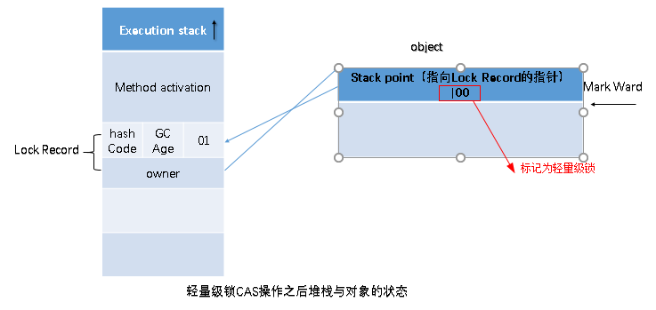

Java-多线程编程（传统的多线程）
简介
学习笔记，详情见：https://www.pdai.tech/md/java/thread/java-thread-x-theorty.html
为什么需要多线程
众所周知，CPU、内存、I/O 设备的速度是有极大差异的，为了合理利用 CPU 的高性能，平衡这三者的速度差异，计算机体系结构、操作系统、编译程序都做出了贡献，主要体现为:
- CPU 增加了缓存，以均衡与内存的速度差异；// 导致
可见性问题 - 操作系统增加了进程、线程，以分时复用 CPU，进而均衡 CPU 与 I/O 设备的速度差异；// 导致
原子性问题 - 编译程序优化指令执行次序，使得缓存能够得到更加合理地利用。// 导致
有序性问题
并发出现问题的根源: 并发三要素
可见性: CPU缓存引起
可见性：一个线程对共享变量的修改，另外一个线程能够立刻看到。
举个简单的例子，看下面这段代码：
1 | //线程1执行的代码 |
假若执行线程1的是CPU1，执行线程2的是CPU2。由上面的分析可知，当线程1执行 i =10这句时，会先把i的初始值加载到CPU1的高速缓存中，然后赋值为10，那么在CPU1的高速缓存当中i的值变为10了，却没有立即写入到主存当中。
此时线程2执行 j = i，它会先去主存读取i的值并加载到CPU2的缓存当中，注意此时内存当中i的值还是0，那么就会使得j的值为0，而不是10.
这就是可见性问题，线程1对变量i修改了之后，线程2没有立即看到线程1修改的值。
原子性: 分时复用引起
原子性：即一个操作或者多个操作 要么全部执行并且执行的过程不会被任何因素打断，要么就都不执行。
经典的转账问题：比如从账户A向账户B转1000元，那么必然包括2个操作：从账户A减去1000元，往账户B加上1000元。
试想一下，如果这2个操作不具备原子性，会造成什么样的后果。假如从账户A减去1000元之后，操作突然中止。这样就会导致账户A虽然减去了1000元，但是账户B没有收到这个转过来的1000元。
所以这2个操作必须要具备原子性才能保证不出现一些意外的问题.
有序性: 重排序引起
有序性：即程序执行的顺序按照代码的先后顺序执行。举个简单的例子，看下面这段代码：
1 | int i = 0; |
上面代码定义了一个int型变量，定义了一个boolean类型变量，然后分别对两个变量进行赋值操作。从代码顺序上看，语句1是在语句2前面的，那么JVM在真正执行这段代码的时候会保证语句1一定会在语句2前面执行吗? 不一定，为什么呢? 这里可能会发生指令重排序（Instruction Reorder）。
在执行程序时为了提高性能，编译器和处理器常常会对指令做重排序。重排序分三种类型：
- 编译器优化的重排序。编译器在不改变单线程程序语义的前提下，可以重新安排语句的执行顺序。
- 指令级并行的重排序。现代处理器采用了指令级并行技术（Instruction-Level Parallelism， ILP）来将多条指令重叠执行。如果不存在数据依赖性，处理器可以改变语句对应机器指令的执行顺序。
- 内存系统的重排序。由于处理器使用缓存和读 / 写缓冲区，这使得加载和存储操作看上去可能是在乱序执行。
从 java 源代码到最终实际执行的指令序列，会分别经历下面三种重排序：

上述的 1 属于编译器重排序，2 和 3 属于处理器重排序。这些重排序都可能会导致多线程程序出现内存可见性问题。对于编译器，JMM 的编译器重排序规则会禁止特定类型的编译器重排序（不是所有的编译器重排序都要禁止）。对于处理器重排序，JMM 的处理器重排序规则会要求 java 编译器在生成指令序列时，插入特定类型的内存屏障（memory barriers，intel 称之为 memory fence）指令，通过内存屏障指令来禁止特定类型的处理器重排序（不是所有的处理器重排序都要禁止）。
JAVA是怎么解决并发问题的: JMM(Java内存模型)
理解的第一个维度：核心知识点
JMM本质上可以理解为，Java 内存模型规范了 JVM 如何提供按需禁用缓存和编译优化的方法。具体来说，这些方法包括：
- volatile、synchronized 和 final 三个关键字
- Happens-Before 规则
理解的第二个维度：可见性，有序性，原子性
- 原子性
在Java中，对基本数据类型的变量的读取和赋值操作是原子性操作，即这些操作是不可被中断的，要么执行，要么不执行。
只有简单的读取、赋值（而且必须是将数字赋值给某个变量，变量之间的相互赋值不是原子操作）才是原子操作。
Java内存模型只保证了基本读取和赋值是原子性操作，如果要实现更大范围操作的原子性，可以通过synchronized和Lock来实现。由于synchronized和Lock能够保证任一时刻只有一个线程执行该代码块，那么自然就不存在原子性问题了，从而保证了原子性。
- 可见性
Java提供了volatile关键字来保证可见性。
当一个共享变量被volatile修饰时，它会保证修改的值会立即被更新到主存，当有其他线程需要读取时，它会去内存中读取新值。
而普通的共享变量不能保证可见性，因为普通共享变量被修改之后，什么时候被写入主存是不确定的，当其他线程去读取时，此时内存中可能还是原来的旧值，因此无法保证可见性。
另外，通过synchronized和Lock也能够保证可见性，synchronized和Lock能保证同一时刻只有一个线程获取锁然后执行同步代码，并且在释放锁之前会将对变量的修改刷新到主存当中。因此可以保证可见性。
- 有序性
在Java里面，可以通过volatile关键字来保证一定的“有序性”（具体原理在下一节讲述）。另外可以通过synchronized和Lock来保证有序性，很显然，synchronized和Lock保证每个时刻是有一个线程执行同步代码，相当于是让线程顺序执行同步代码，自然就保证了有序性。当然JMM是通过Happens-Before 规则来保证有序性的。
Happens-Before 规则
如何理解 Happens-Before 呢？如果望文生义（很多网文也都爱按字面意思翻译成“先行发生”），那就南辕北辙了，Happens-Before 并不是说前面一个操作发生在后续操作的前面，它真正要表达的是：前面一个操作的结果对后续操作是可见的。就像有心灵感应的两个人，虽然远隔千里，一个人心之所想，另一个人都看得到。
Happens-Before 规则就是要保证线程之间的这种“心灵感应”。所以比较正式的说法是：Happens-Before 约束了编译器的优化行为，虽允许编译器优化，但是要求编译器优化后一定遵守 Happens-Before 规则。
1. 单一线程原则
Single Thread rule
在一个线程内，在程序前面的操作先行发生于后面的操作。

这条规则是指在一个线程中，按照程序顺序，前面的操作 Happens-Before 于后续的任意操作。这还是比较容易理解的，比如刚才那段示例代码，按照程序的顺序，第 6 行代码 “x = 42;” Happens-Before 于第 7 行代码 “v = true;”，这就是规则 1 的内容，也比较符合单线程里面的思维：程序前面对某个变量的修改一定是对后续操作可见的。
2. volatile 变量规则
Volatile Variable Rule
对一个 volatile 变量的写操作先行发生于后面对这个变量的读操作。
这个就有点费解了，对一个 volatile 变量的写操作相对于后续对这个 volatile 变量的读操作可见，这怎么看都是禁用缓存的意思啊，貌似和 1.5 版本以前的语义没有变化啊？如果单看这个规则，的确是这样，但是如果我们关联一下规则 3，就有点不一样的感觉了。
3.传递性
Transitivity
这条规则是指如果 A Happens-Before B，且 B Happens-Before C，那么 A Happens-Before C。
我们将规则 3 的传递性应用到我们的例子中，会发生什么呢？可以看下面这幅图：

从图中，我们可以看到：
- “x=42” Happens-Before 写变量 “v=true” ，这是规则 1 的内容；
- 写变量“v=true” Happens-Before 读变量 “v=true”，这是规则 2 的内容 。
再根据这个传递性规则，我们得到结果：“x=42” Happens-Before 读变量“v=true”。这意味着什么呢？如果线程 B 读到了“v=true”，那么线程 A 设置的“x=42”对线程 B 是可见的。也就是说，线程 B 能看到 “x == 42” ，有没有一种恍然大悟的感觉？这就是 1.5 版本对 volatile 语义的增强，这个增强意义重大，1.5 版本的并发工具包（java.util.concurrent）就是靠 volatile 语义来搞定可见性的，这个在后面的内容中会详细介绍。
4. 管程锁定规则
Monitor Lock Rule
这条规则是指对一个锁的解锁 Happens-Before 于后续对这个锁的加锁。要理解这个规则，就首先要了解“管程指的是什么”。管程是一种通用的同步原语，在 Java 中指的就是 synchronized，synchronized 是 Java 里对管程的实现。管程中的锁在 Java 里是隐式实现的，例如下面的代码，在进入同步块之前，会自动加锁，而在代码块执行完会自动释放锁，加锁以及释放锁都是编译器帮我们实现的。
1 | synchronized (this) { //此处自动加锁 |
所以结合规则 4——管程中锁的规则，可以这样理解：假设 x 的初始值是 10，线程 A 执行完代码块后 x 的值会变成 12（执行完自动释放锁），线程 B 进入代码块时，能够看到线程 A 对 x 的写操作，也就是线程 B 能够看到 x==12。这个也是符合我们直觉的，应该不难理解。
5. 线程启动规则
Thread Start Rule
Thread 对象的 start() 方法调用先行发生于此线程的每一个动作。
这条是关于线程启动的。它是指主线程 A 启动子线程 B 后，子线程 B 能够看到主线程在启动子线程 B 前的操作。换句话说就是，如果线程 A 调用线程 B 的 start() 方法（即在线程 A 中启动线程 B），那么该 start() 操作 Happens-Before 于线程 B 中的任意操作。具体可参考下面示例代码。
1 |
|
6. 线程加入规则
Thread Join Rule
这条是关于线程等待的。它是指主线程 A 等待子线程 B 完成（主线程 A 通过调用子线程 B 的 join() 方法实现），当子线程 B 完成后（主线程 A 中 join() 方法返回），主线程能够看到子线程的操作。当然所谓的“看到”，指的是对共享变量的操作。换句话说就是，如果在线程 A 中，调用线程 B 的 join() 并成功返回，那么线程 B 中的任意操作 Happens-Before 于该 join() 操作的返回。具体可参考下面示例代码。
1 |
|
7. 线程中断规则
Thread Interruption Rule
对线程 interrupt() 方法的调用先行发生于被中断线程的代码检测到中断事件的发生，可以通过 interrupted() 方法检测到是否有中断发生。
8. 对象终结规则
Finalizer Rule
一个对象的初始化完成(构造函数执行结束)先行发生于它的 finalize() 方法的开始。
Java 并发 - 线程基础
线程状态转换

新建(New)
创建后尚未启动。
可运行(Runnable)
可能正在运行，也可能正在等待 CPU 时间片。
包含了操作系统线程状态中的 Running 和 Ready。
阻塞(Blocking)
等待获取一个排它锁，如果其线程释放了锁就会结束此状态。
无限期等待(Waiting)
等待其它线程显式地唤醒，否则不会被分配 CPU 时间片。
| 进入方法 | 退出方法 |
|---|---|
| 没有设置 Timeout 参数的 Object.wait() 方法 | Object.notify() / Object.notifyAll() |
| 没有设置 Timeout 参数的 Thread.join() 方法 | 被调用的线程执行完毕 |
| LockSupport.park() 方法 | - |
限期等待(Timed Waiting)
无需等待其它线程显式地唤醒，在一定时间之后会被系统自动唤醒。
调用 Thread.sleep() 方法使线程进入限期等待状态时，常常用“使一个线程睡眠”进行描述。
调用 Object.wait() 方法使线程进入限期等待或者无限期等待时，常常用“挂起一个线程”进行描述。
睡眠和挂起是用来描述行为，而阻塞和等待用来描述状态。
阻塞和等待的区别在于，阻塞是被动的，它是在等待获取一个排它锁。而等待是主动的，通过调用 Thread.sleep() 和 Object.wait() 等方法进入。
| 进入方法 | 退出方法 |
|---|---|
| Thread.sleep() 方法 | 时间结束 |
| 设置了 Timeout 参数的 Object.wait() 方法 | 时间结束 / Object.notify() / Object.notifyAll() |
| 设置了 Timeout 参数的 Thread.join() 方法 | 时间结束 / 被调用的线程执行完毕 |
| LockSupport.parkNanos() 方法 | - |
| LockSupport.parkUntil() 方法 | - |
死亡(Terminated)
可以是线程结束任务之后自己结束，或者产生了异常而结束。
线程使用方式
有三种使用线程的方法:
- 实现 Runnable 接口；
- 实现 Callable 接口；
- 继承 Thread 类。
实现 Runnable 和 Callable 接口的类只能当做一个可以在线程中运行的任务，不是真正意义上的线程，因此最后还需要通过 Thread 来调用。可以说任务是通过线程驱动从而执行的。
实现 Runnable 接口
需要实现 run() 方法。
通过 Thread 调用 start() 方法来启动线程。
1 | public class MyRunnable implements Runnable { |
1 | public static void main(String[] args) { |
实现 Callable 接口
与 Runnable 相比，Callable 可以有返回值，返回值通过 FutureTask 进行封装。
1 | public class MyCallable implements Callable<Integer> { |
1 | public static void main(String[] args) throws ExecutionException, InterruptedException { |
继承 Thread 类
同样也是需要实现 run() 方法，因为 Thread 类也实现了 Runable 接口。
当调用 start() 方法启动一个线程时，虚拟机会将该线程放入就绪队列中等待被调度，当一个线程被调度时会执行该线程的 run() 方法。
1 | public class MyThread extends Thread { |
1 | public static void main(String[] args) { |
实现接口 VS 继承 Thread
实现接口会更好一些，因为:
- Java 不支持多重继承，因此继承了 Thread 类就无法继承其它类，但是可以实现多个接口；
- 类可能只要求可执行就行，继承整个 Thread 类开销过大。
关键字: volatile详解
volatile关键字的作用是什么?
volatile能保证原子性吗?
之前32位机器上共享的long和double变量的为什么要用volatile? 现在64位机器上是否也要设置呢?
i++为什么不能保证原子性?
volatile是如何实现可见性的? 内存屏障。
volatile是如何实现有序性的? happens-before等
说下volatile的应用场景?
volatile的作用详解
防重排序
我们从一个最经典的例子来分析重排序问题。大家应该都很熟悉单例模式的实现，而在并发环境下的单例实现方式，我们通常可以采用双重检查加锁(DCL)的方式来实现。其源码如下：
1 | public class Singleton { |
现在我们分析一下为什么要在变量singleton之间加上volatile关键字。要理解这个问题，先要了解对象的构造过程，实例化一个对象其实可以分为三个步骤：
- 分配内存空间。
- 初始化对象。
- 将内存空间的地址赋值给对应的引用。
但是由于操作系统可以对指令进行重排序，所以上面的过程也可能会变成如下过程：
- 分配内存空间。
- 将内存空间的地址赋值给对应的引用。
- 初始化对象
如果是这个流程，多线程环境下就可能将一个未初始化的对象引用暴露出来，从而导致不可预料的结果。因此，为了防止这个过程的重排序，我们需要将变量设置为volatile类型的变量。
实现可见性
可见性问题主要指一个线程修改了共享变量值，而另一个线程却看不到。引起可见性问题的主要原因是每个线程拥有自己的一个高速缓存区——线程工作内存。volatile关键字能有效的解决这个问题，我们看下下面的例子，就可以知道其作用：
1 | public class VolatileTest { |
直观上说，这段代码的结果只可能有两种：b=3;a=3 或 b=2;a=1。不过运行上面的代码(可能时间上要长一点)，你会发现除了上两种结果之外，还出现了第三种结果：
1 | ...... |
为什么会出现b=3;a=1这种结果呢? 正常情况下，如果先执行change方法，再执行print方法，输出结果应该为b=3;a=3。相反，如果先执行的print方法，再执行change方法，结果应该是 b=2;a=1。那b=3;a=1的结果是怎么出来的? 原因就是第一个线程将值a=3修改后，但是对第二个线程是不可见的，所以才出现这一结果。如果将a和b都改成volatile类型的变量再执行，则再也不会出现b=3;a=1的结果了。
保证原子性:单次读/写
基于volatile保证单次的读/写操作具有原子性
问题1： i++为什么不能保证原子性?
对于原子性，需要强调一点，也是大家容易误解的一点：对volatile变量的单次读/写操作可以保证原子性的，如long和double类型变量，但是并不能保证i++这种操作的原子性，因为本质上i++是读、写两次操作。
现在我们就通过下列程序来演示一下这个问题：
1 | public class VolatileTest01 { |
大家可能会误认为对变量i加上关键字volatile后，这段程序就是线程安全的。大家可以尝试运行上面的程序。下面是我本地运行的结果：981 可能每个人运行的结果不相同。不过应该能看出，volatile是无法保证原子性的(否则结果应该是1000)。原因也很简单，i++其实是一个复合操作，包括三步骤：
- 读取i的值。
- 对i加1。
- 将i的值写回内存。 volatile是无法保证这三个操作是具有原子性的，我们可以通过AtomicInteger或者Synchronized来保证+1操作的原子性。 注：上面几段代码中多处执行了Thread.sleep()方法，目的是为了增加并发问题的产生几率，无其他作用。
问题2： 共享的long和double变量的为什么要用volatile?
因为long和double两种数据类型的操作可分为高32位和低32位两部分，因此普通的long或double类型读/写可能不是原子的。因此，鼓励大家将共享的long和double变量设置为volatile类型，这样能保证任何情况下对long和double的单次读/写操作都具有原子性。
volatile 的实现原理
volatile 的可见性和有序性基本是基于内存屏障(Memory Barrier)实现。
内存屏障（memory barrier）是一个CPU指令。基本上，它是这样一条指令：
a) 确保一些特定操作执行的顺序；
b) 影响一些数据的可见性(可能是某些指令执行后的结果)。**
编译器和CPU可以在保证输出结果一样的情况下对指令重排序，使性能得到优化。插入一个内存屏障，相当于告诉CPU和编译器先于这个命令的必须先执行，后于这个命令的必须后执行。内存屏障另一个作用是强制更新一次不同CPU的缓存。例如，一个写屏障会把这个屏障前写入的数据刷新到缓存，这样任何试图读取该数据的线程将得到最新值，而不用考虑到底是被哪个cpu核心或者哪颗CPU执行的。
为什么需要内存屏障
我们知道，在多CPU（核）场景下，为了充分利用CPU，会通过流水线将指令并行进行。为了能并行执行，又需要将指令进行重排序以便进行并行执行，那么问题来了，那些指令不是在所有场景下都能进行重排，除了本身的一些规则（如Happens Before 规则）之外，我们还需要确保多CPU的高速缓存中的数据与内存保持一致性, 不能确保内存与CPU缓存数据一致性的指令也不能重排，内存屏障正是通过阻止屏障两边的指令重排序来避免编译器和硬件的不正确优化而提出的一种解决办法。
内存屏障的主要类型
不同硬件实现内存屏障的方式不同，Java内存模型屏蔽了这种底层硬件平台的差异，由JVM来为不同的平台生成相应的机器码。
Java内存屏障主要有Load和Store两类。
对Load Barrier来说，在读指令前插入读屏障，可以让高速缓存中的数据失效，重新从主内存加载数据
对Store Barrier来说，在写指令之后插入写屏障，能让写入缓存的最新数据写回到主内存
volatile 有序性实现
volatile 的 happens-before 关系
happens-before 规则中有一条是 volatile 变量规则：对一个 volatile 域的写，happens-before 于任意后续对这个 volatile 域的读。
1 | //假设线程A执行writer方法，线程B执行reader方法 |
根据 happens-before 规则，上面过程会建立 3 类 happens-before 关系。
- 根据程序次序规则：1 happens-before 2 且 3 happens-before 4。
- 根据 volatile 规则：2 happens-before 3。
- 根据 happens-before 的传递性规则：1 happens-before 4。

因为以上规则，当线程 A 将 volatile 变量 flag 更改为 true 后，线程 B 能够迅速感知。
volatile 禁止重排序
为了性能优化，JMM 在不改变正确语义的前提下，会允许编译器和处理器对指令序列进行重排序。JMM 提供了内存屏障阻止这种重排序。
Java 编译器会在生成指令系列时在适当的位置会插入内存屏障指令来禁止特定类型的处理器重排序。
为了实现 volatile 内存语义时，编译器在生成字节码时，会在指令序列中插入内存屏障来禁止特定类型的处理器重排序。
对于编译器来说，发现一个最优布置来最小化插入屏障的总数几乎是不可能的，为此，JMM 采取了保守的策略。
- 在每个 volatile 写操作的前面插入一个 StoreStore 屏障。
- 在每个 volatile 写操作的后面插入一个 StoreLoad 屏障。
- 在每个 volatile 读操作的后面插入一个 LoadLoad 屏障。
- 在每个 volatile 读操作的后面插入一个 LoadStore 屏障。
volatile 写是在前面和后面分别插入内存屏障，而 volatile 读操作是在后面插入两个内存屏障。
| 内存屏障 | 说明 |
|---|---|
| StoreStore 屏障 | 禁止上面的普通写和下面的 volatile 写重排序。 |
| StoreLoad 屏障 | 防止上面的 volatile 写与下面可能有的 volatile 读/写重排序。 |
| LoadLoad 屏障 | 禁止下面所有的普通读操作和上面的 volatile 读重排序。 |
| LoadStore 屏障 | 禁止下面所有的普通写操作和上面的 volatile 读重排序。 |

volatile 可见性实现
写一段简单的 Java 代码，声明一个 volatile 变量，并赋值。
1 | public class Test { |
通过 hsdis 和 jitwatch 工具可以得到编译后的汇编代码:
1 | ...... |
lock 前缀的指令在多核处理器下会引发两件事情:
- 将当前处理器缓存行的数据写回到系统内存。
- 写回内存的操作会使在其他 CPU 里缓存了该内存地址的数据无效。
为了提高处理速度，处理器不直接和内存进行通信，而是先将系统内存的数据读到内部缓存(L1，L2 或其他)后再进行操作，但操作完不知道何时会写到内存。
如果对声明了 volatile 的变量进行写操作，JVM 就会向处理器发送一条 lock 前缀的指令，将这个变量所在缓存行的数据写回到系统内存。
为了保证各个处理器的缓存是一致的，实现了缓存一致性协议(MESI)，每个处理器通过嗅探在总线上传播的数据来检查自己缓存的值是不是过期了，当处理器发现自己缓存行对应的内存地址被修改，就会将当前处理器的缓存行设置成无效状态，当处理器对这个数据进行修改操作的时候，会重新从系统内存中把数据读到处理器缓存里。
所有多核处理器下还会完成：当处理器发现本地缓存失效后，就会从内存中重读该变量数据，即可以获取当前最新值。
volatile 变量通过这样的机制就使得每个线程都能获得该变量的最新值。
lock 指令
在 Pentium 和早期的 IA-32 处理器中，lock 前缀会使处理器执行当前指令时产生一个 LOCK# 信号，会对总线进行锁定，其它 CPU 对内存的读写请求都会被阻塞，直到锁释放。 后来的处理器，加锁操作是由高速缓存锁代替总线锁来处理。 因为锁总线的开销比较大，锁总线期间其他 CPU 没法访问内存。 这种场景多缓存的数据一致通过缓存一致性协议(MESI)来保证。
缓存一致性
缓存是分段(line)的，一个段对应一块存储空间，称之为缓存行，它是 CPU 缓存中可分配的最小存储单元，大小 32 字节、64 字节、128 字节不等，这与 CPU 架构有关，通常来说是 64 字节。 LOCK# 因为锁总线效率太低，因此使用了多组缓存。 为了使其行为看起来如同一组缓存那样。因而设计了 缓存一致性协议。 缓存一致性协议有多种，但是日常处理的大多数计算机设备都属于 “ 嗅探(snooping)” 协议。 所有内存的传输都发生在一条共享的总线上，而所有的处理器都能看到这条总线。 缓存本身是独立的，但是内存是共享资源，所有的内存访问都要经过仲裁(同一个指令周期中，只有一个 CPU 缓存可以读写内存)。 CPU 缓存不仅仅在做内存传输的时候才与总线打交道，而是不停在嗅探总线上发生的数据交换，跟踪其他缓存在做什么。 当一个缓存代表它所属的处理器去读写内存时，其它处理器都会得到通知，它们以此来使自己的缓存保持同步。 只要某个处理器写内存，其它处理器马上知道这块内存在它们的缓存段中已经失效。
关键字: synchronized详解
Java中提供了两种实现同步的基础语义：synchronized方法和synchronized块， 我们来看个demo：
1 | public class SyncTest { |
当SyncTest.java被编译成class文件的时候，synchronized关键字和synchronized方法的字节码略有不同，我们可以用javap -v 命令查看class文件对应的JVM字节码信息，部分信息如下：
1 | { |
从上面的中文注释处可以看到，对于synchronized关键字而言，javac在编译时，会生成对应的monitorenter和monitorexit指令分别对应synchronized同步块的进入和退出，有两个monitorexit指令的原因是：为了保证抛异常的情况下也能释放锁，所以javac为同步代码块添加了一个隐式的try-finally，在finally中会调用monitorexit命令释放锁。而对于synchronized方法而言，javac为其生成了一个ACC_SYNCHRONIZED关键字，在JVM进行方法调用时，发现调用的方法被ACC_SYNCHRONIZED修饰，则会先尝试获得锁。
在JVM底层，对于这两种synchronized语义的实现大致相同，在后文中会选择一种进行详细分析。
锁的几种形式
传统的锁（也就是下文要说的重量级锁）依赖于系统的同步函数，在linux上使用mutex互斥锁，最底层实现依赖于futex，这些同步函数都涉及到用户态和内核态的切换、进程的上下文切换，成本较高。对于加了synchronized关键字但运行时并没有多线程竞争，或两个线程接近于交替执行的情况，使用传统锁机制无疑效率是会比较低的。
在JDK 1.6之前,synchronized只有传统的锁机制，因此给开发者留下了synchronized关键字相比于其他同步机制性能不好的印象。
在JDK 1.6引入了两种新型锁机制：偏向锁和轻量级锁，它们的引入是为了解决在没有多线程竞争或基本没有竞争的场景下因使用传统锁机制带来的性能开销问题。
在看这几种锁机制的实现前，我们先来了解下对象头，它是实现多种锁机制的基础。
对象头
因为在Java中任意对象都可以用作锁，因此必定要有一个映射关系，存储该对象以及其对应的锁信息（比如当前哪个线程持有锁，哪些线程在等待）。一种很直观的方法是，用一个全局map，来存储这个映射关系，但这样会有一些问题：需要对map做线程安全保障，不同的synchronized之间会相互影响，性能差；另外当同步对象较多时，该map可能会占用比较多的内存。
所以最好的办法是将这个映射关系存储在对象头中，因为对象头本身也有一些hashcode、GC相关的数据，所以如果能将锁信息与这些信息共存在对象头中就好了。
在JVM中，对象在内存中除了本身的数据外还会有个对象头，对于普通对象而言，其对象头中有两类信息：mark word和类型指针。另外对于数组而言还会有一份记录数组长度的数据。
类型指针是指向该对象所属类对象的指针，mark word用于存储对象的HashCode、GC分代年龄、锁状态等信息。在32位系统上mark word长度为32字节，64位系统上长度为64字节。
可以看到锁信息也是存在于对象的mark word中的。当对象状态为偏向锁（biasable）时，mark word存储的是偏向的线程ID；当状态为轻量级锁（lightweight locked）时，mark word存储的是指向线程栈中Lock Record的指针；当状态为重量级锁（inflated）时，为指向堆中的monitor对象的指针。
JVM中锁的优化
简单来说在JVM中monitorenter和monitorexit字节码依赖于底层的操作系统的Mutex Lock来实现的，但是由于使用Mutex Lock需要将当前线程挂起并从用户态切换到内核态来执行，这种切换的代价是非常昂贵的；然而在现实中的大部分情况下，同步方法是运行在单线程环境(无锁竞争环境)如果每次都调用Mutex Lock那么将严重的影响程序的性能。不过在jdk1.6中对锁的实现引入了大量的优化，如锁粗化(Lock Coarsening)、锁消除(Lock Elimination)、轻量级锁(Lightweight Locking)、偏向锁(Biased Locking)、适应性自旋(Adaptive Spinning)等技术来减少锁操作的开销。
锁粗化(Lock Coarsening)：也就是减少不必要的紧连在一起的unlock，lock操作，将多个连续的锁扩展成一个范围更大的锁。
锁消除(Lock Elimination)：通过运行时JIT编译器的逃逸分析来消除一些没有在当前同步块以外被其他线程共享的数据的锁保护，通过逃逸分析也可以在线程本地Stack上进行对象空间的分配(同时还可以减少Heap上的垃圾收集开销)。
轻量级锁(Lightweight Locking)：这种锁实现的背后基于这样一种假设，即在真实的情况下我们程序中的大部分同步代码一般都处于无锁竞争状态(即单线程执行环境)，在无锁竞争的情况下完全可以避免调用操作系统层面的重量级互斥锁，取而代之的是在monitorenter和monitorexit中只需要依靠一条CAS原子指令就可以完成锁的获取及释放。当存在锁竞争的情况下，执行CAS指令失败的线程将调用操作系统互斥锁进入到阻塞状态，当锁被释放的时候被唤醒(具体处理步骤下面详细讨论)。
偏向锁(Biased Locking)：是为了在无锁竞争的情况下避免在锁获取过程中执行不必要的CAS原子指令，因为CAS原子指令虽然相对于重量级锁来说开销比较小但还是存在非常可观的本地延迟。
适应性自旋(Adaptive Spinning)：当线程在获取轻量级锁的过程中执行CAS操作失败时，在进入与monitor相关联的操作系统重量级锁(mutex semaphore)前会进入忙等待(Spinning)然后再次尝试，当尝试一定的次数后如果仍然没有成功则调用与该monitor关联的semaphore(即互斥锁)进入到阻塞状态
锁的类型
在Java SE 1.6里Synchronied同步锁，一共有四种状态：无锁、偏向锁、轻量级所、重量级锁，它会随着竞争情况逐渐升级。锁可以升级但是不可以降级，目的是为了提供获取锁和释放锁的效率。
锁膨胀方向： 无锁 → 偏向锁 → 轻量级锁(自旋锁) → 重量级锁 (此过程是不可逆的)
偏向锁
引入背景：在大多实际环境下，锁不仅不存在多线程竞争，而且总是由同一个线程多次获取，那么在同一个线程反复获取所释放锁中，其中并还没有锁的竞争，那么这样看上去，多次的获取锁和释放锁带来了很多不必要的性能开销和上下文切换。
为了解决这一问题，HotSpot的作者在Java SE 1.6 中对Synchronized进行了优化，引入了偏向锁。当一个线程访问同步快并获取锁时，会在对象头和栈帧中的锁记录里存储锁偏向的线程ID，以后该线程在进入和推出同步块时不需要进行CAS操作来加锁和解锁。只需要简单地测试一下对象头的Mark Word里是否存储着指向当前线程的偏向锁。如果成功，表示线程已经获取到了锁。
偏向锁的撤销
偏向锁使用了一种等待竞争出现才会释放锁的机制。所以当其他线程尝试获取偏向锁时，持有偏向锁的线程才会释放锁。但是偏向锁的撤销需要等到全局安全点(就是当前线程没有正在执行的字节码)。它会首先暂停拥有偏向锁的线程，让你后检查持有偏向锁的线程是否活着。如果线程不处于活动状态，直接将对象头设置为无锁状态。如果线程活着，JVM会遍历栈帧中的锁记录，栈帧中的锁记录和对象头要么偏向于其他线程，要么恢复到无锁状态或者标记对象不适合作为偏向锁。
轻量级锁
在JDK 1.6之后引入的轻量级锁，需要注意的是轻量级锁并不是替代重量级锁的，而是对在大多数情况下同步块并不会有竞争出现提出的一种优化。它可以减少重量级锁对线程的阻塞带来地线程开销。从而提高并发性能。
如果要理解轻量级锁，那么必须先要了解HotSpot虚拟机中对象头地内存布局。上面介绍Java对象头也详细介绍过。在对象头中(Object Header)存在两部分。第一部分用于存储对象自身的运行时数据，HashCode、GC Age、锁标记位、是否为偏向锁。等。一般为32位或者64位(视操作系统位数定)。官方称之为Mark Word，它是实现轻量级锁和偏向锁的关键。 另外一部分存储的是指向方法区对象类型数据的指针(Klass Point)，如果对象是数组的话，还会有一个额外的部分用于存储数据的长度。
轻量级锁加锁(CAS机制)
在线程执行同步块之前，JVM会先在当前线程的栈帧中创建一个名为锁记录(Lock Record)的空间，用于存储锁对象目前的Mark Word的拷贝(JVM会将对象头中的Mark Word拷贝到锁记录中，官方称为Displaced Mark Ward)这个时候线程堆栈与对象头的状态如图：

如上图所示：如果当前对象没有被锁定，那么锁标志位位01状态，JVM在执行当前线程时，首先会在当前线程栈帧中创建锁记录Lock Record的空间用于存储锁对象目前的Mark Word的拷贝。
然后，虚拟机使用CAS操作将标记字段Mark Word拷贝到锁记录中，并且将Mark Word更新为指向Lock Record的指针。如果更新成功了，那么这个线程就有用了该对象的锁，并且对象Mark Word的锁标志位更新为(Mark Word中最后的2bit)00，即表示此对象处于轻量级锁定状态，如图：

如果这个更新操作失败，JVM会检查当前的Mark Word中是否存在指向当前线程的栈帧的指针，如果有，说明该锁已经被获取，可以直接调用。如果没有，则说明该锁被其他线程抢占了，如果有两条以上的线程竞争同一个锁，那轻量级锁就不再有效，直接膨胀位重量级锁，没有获得锁的线程会被阻塞。此时，锁的标志位为10.Mark Word中存储的时指向重量级锁的指针。
轻量级解锁时，会使用原子的CAS操作将Displaced Mark Word替换回到对象头中，如果成功，则表示没有发生竞争关系。如果失败，表示当前锁存在竞争关系。锁就会膨胀成重量级锁。
关键字: final详解
final基础使用
修饰类
当某个类的整体定义为final时，就表明了你不能打算继承该类，而且也不允许别人这么做。即这个类是不能有子类的。
注意：final类中的所有方法都隐式为final，因为无法覆盖他们，所以在final类中给任何方法添加final关键字是没有任何意义的。
修饰方法
- private 方法是隐式的final
- final方法是可以被重载的
修饰参数
Java允许在参数列表中以声明的方式将参数指明为final，这意味这你无法在方法中更改参数引用所指向的对象。这个特性主要用来向匿名内部类传递数据。
修饰变量
所有的final修饰的字段都是编译期常量吗?
现在来看编译期常量和非编译期常量, 如：
1 | public class Test { |
k的值由随机数对象决定，所以不是所有的final修饰的字段都是编译期常量，只是k的值在被初始化后无法被更改。
1 | import java.util.Random; |
上面代码某次输出结果：
1 | k=2 k2=7 |
我们可以发现对于不同的对象k的值是不同的，但是k2的值却是相同的，这是为什么呢? 因为static关键字所修饰的字段并不属于一个对象，而是属于这个类的。也可简单的理解为static final所修饰的字段仅占据内存的一个一份空间，一旦被初始化之后便不会被更改。
blank final
Java允许生成空白final，也就是说被声明为final但又没有给出定值的字段,但是必须在该字段被使用之前被赋值，这给予我们两种选择：
- 在定义处进行赋值(这不叫空白final)
- 在构造器中进行赋值，保证了该值在被使用前赋值。
这增强了final的灵活性。
看下面代码:
1 | public class Test { |
可以看到i2的赋值更为灵活。但是请注意，如果字段由static和final修饰，仅能在定义处赋值，因为该字段不属于对象，属于这个类。